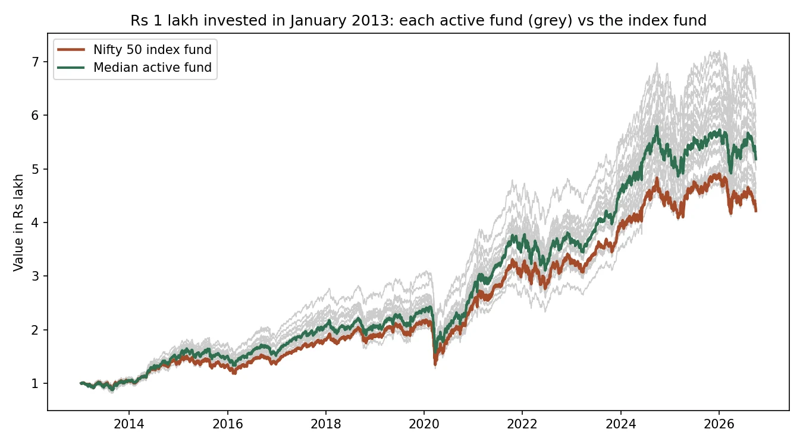
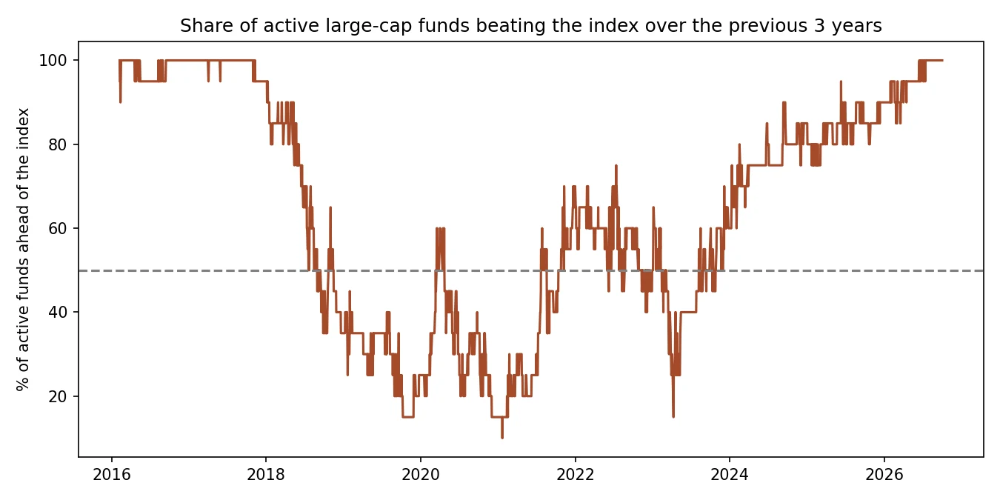
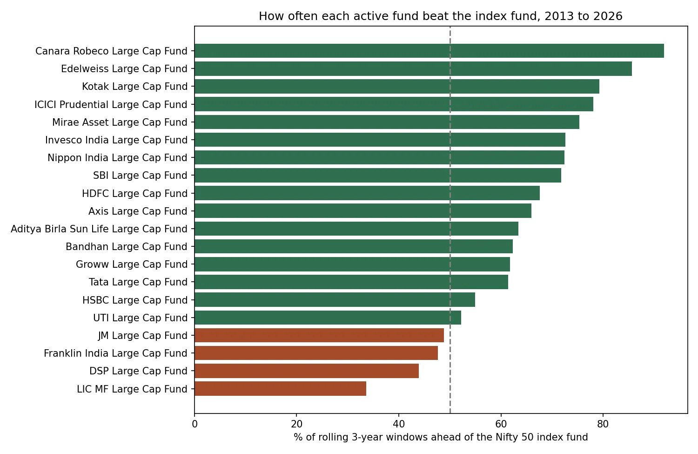

Investing · India
Active vs. index: do Indian large-cap funds beat a Nifty 50 index fund?
- Business question
- Do active large-cap mutual funds in India beat a cheap Nifty 50 index fund?
- Key finding
- Over 2013–2026, 19 of the 20 surviving active funds did: 12.7% a year for the median fund vs 11.05% for the index fund. But it comes in cycles: from 2019 to 2021 only about 30% were ahead.
- Recommendation
- Treat the index fund as the default: it costs least and needs no fund picking. The active edge is real but overstated: 9 large-cap funds closed or merged and aren't in the comparison, and an investor still has to pick the winners in advance.
- Estimated impact
- 19 of 20Surviving active large-cap funds beat the Nifty 50 index fund from 2013 to 2026. 9 other funds closed or merged along the way, so the real win rate is lower.
- Data
- Daily NAVs for 43 large-cap funds (direct plans) from AMFI via mfapi.in
- Period
- January 2013 to October 2026, 13.7 years
- Tools
- Python, pandas, matplotlib
Results



How I did it
- Downloaded daily NAVs for every large-cap fund's direct growth plan, plus the UTI Nifty 50 Index Fund as the benchmark (a real index fund pays fees, like an investor would).
- Ran data checks on every fund: missing prices, zero prices, duplicate dates, daily moves over 15%, and whether the fund still exists. One zero price was an error and was removed.
- Kept the 20 active funds that existed for the whole period, so every fund is compared over the same years.
- Worked out each fund's yearly return (CAGR), Sharpe ratio and worst fall, then compared every rolling 3-year window against the index fund.
What could make this wrong
- Survivorship bias: 9 funds that closed or merged aren't in the comparison, so active funds look better than they really were.
- Only direct plans: regular plans charge about 0.5–1% a year more and would beat the index less often.
- No taxes or exit loads, and the 6.5% risk-free rate in the Sharpe ratio is an approximation.
What I learned
- Check the data first: one fund's price was 0.0 on a Sunday, which made it look like it lost 100%.
- Look at who is missing: funds that closed drop out of the data and make the survivors look better.
- One number over 13 years hides the story: the answer flips depending on which 3 years you look at.
What I'd do next
- Add the closed funds back up to the day they closed, to measure how much survivorship bias matters.
- Compare direct and regular plans, to show what the extra fees cost over 20 years.
- Use the Nifty 50 Total Return Index as a second benchmark.